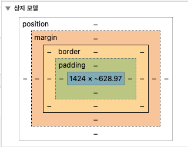

CSS
개요
캐스케이딩 스타일 시트(CSS)는 HTML 또는 XML(SVG, MathML 또는 XHTML과 같은 XML 방언 포함)과 같은 마크업 언어로 작성된 문서의 표시 및 스타일을 지정하는 데 사용되는 스타일 시트 언어이다. CSS는 HTML 및 JavaScript와 함께 월드와이드웹의 초석 기술이다.
CSS는 레이아웃, 색상, 글꼴 등 콘텐츠와 프레젠테이션을 분리할 수 있도록 설계되었다. 이렇게 분리하면 프레젠테이션에 신경 쓰지 않고 콘텐츠를 작성할 수 있어 콘텐츠 접근성이 향상되고, 프레젠테이션 특성 지정에 더 유연하고 제어할 수 있으며, 여러 웹 페이지에서 관련 CSS를 별도의 .css 파일에 지정하여 서식을 공유할 수 있으므로 콘텐츠 구조의 복잡성과 반복을 줄일 수 있고 .css 파일을 캐시하여 파일과 해당 서식을 공유하는 페이지 간의 페이지 로드 속도를 향상시킬 수 있다.
텍스트 꾸미기 관련
font-size: 20px;
font-weight: bold;
text-decoration: underline;
색상 관련
color: green;
상자 모델

border를 중심으로, 안쪽 영역이 padding, 바깥쪽 영역이 margin이다.
반응형 웹
반응형 웹 디자인(RWD)은 사용성과 만족도를 보장하기 위해 최소에서 최대 디스플레이 크기까지 다양한 장치와 창 또는 화면 크기에서 웹 페이지를 잘 렌더링하는 것을 목표로 하는 웹 디자인 접근 방식이다.
반응형 웹 디자인은 @media 스코프를 이용하여 처리하며, 대응할 화면의 사이즈를 파라미터로 넘기고, 해당 스코프에서 보일 예외적인 스타일시트를 정의하면 된다.
...
#grid {
display: grid;
grid-template-columns: 180px 1fr;
}
#article {
padding-left: 15px;
}
@media(width < 800px) {
#grid {
display: block;
}
...
}